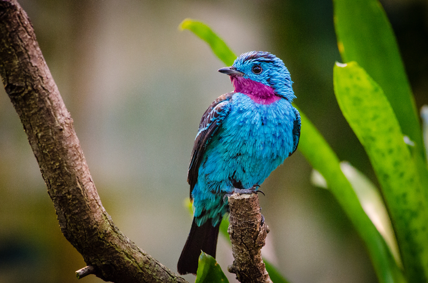

Emmanuelle NINI
Project manager & Programmer junior
Hier j'ai appelé mon réseau wifi "Hack me if you can". Aujourd'hui il s'appelle "Challenge accepted"
|  | L'oiseau, Robuste et vif, le diamant mandarin est un oiseau grégaire qui se reproduit à la vitesse de la lumière en captivité. Peu bruyant et ne nécessitant pas d’attention particulière, ce petit pinson est une espèce d’oiseaux idéale pour les débutants. |
| Danstonchat : Sur DTC on partage nos dialogues rigolols issus des internets. |